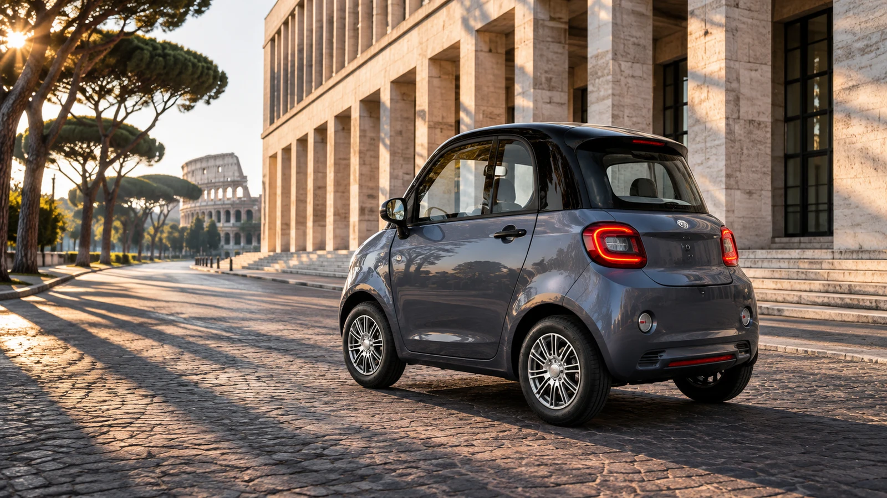

Fino a 45 km
Autonomia massima dichiarata. Il percorso e le condizioni di utilizzo incidono sulla distanza effettiva.
Due posti e un motore elettrico da 3 kW. Per il tragitto fino al lavoro, una spesa in centro o un passaggio a casa.
Esplora i colori
Autonomia massima dichiarata. Il percorso e le condizioni di utilizzo incidono sulla distanza effettiva.
Velocità massima con il motore elettrico da 3 kW.
Batteria da 6 kWh nominali. Peso del veicolo: 385 kg.
Due posti, schermo centrale con Android Auto, Bluetooth e audio. L’aria condizionata è opzionale.
Cerchi in lega da 12 pollici e chiusura centralizzata con telecomando.